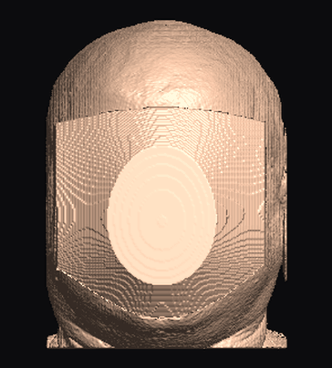
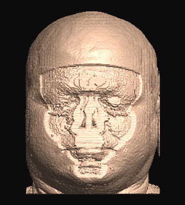
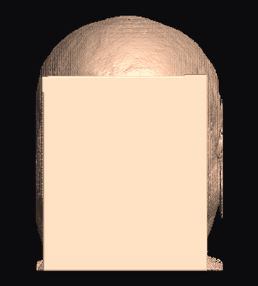
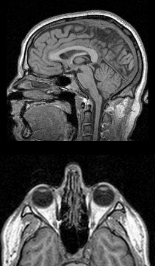
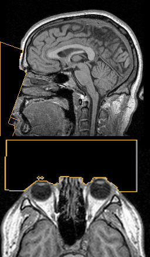
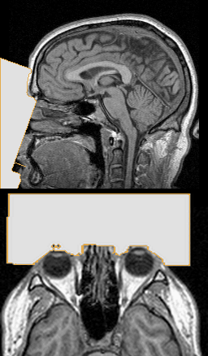

RadVeil documentation
Face and ear anonymization for head MRI and CT, from Python, Rust, C/C++ or the command line. One Rust engine sits behind every interface, so the behaviour, the parameters and the reports are the same wherever you call it from. Every example on this page is run against real data before it is published.
Install
Python ≥ 3.9
pip install radveil
Wheels for Linux, macOS and Windows. No model download and no dlib: the face detector and brain-extraction weights are built in.
Rust ≥ 1.98
cargo add radveil-core
Pure Rust; models are embedded. Features detector, synthstrip, rvbrain are on by default.
C / C++
Download radveil-v0.1.0-<target> from GitHub Releases: include/radveil.h, shared and static lib/, and LINKING.txt.
Command line
cargo install radveil-cli or the bin/radveil binary in the release archive. No Python needed.
dlib is not a dependency. It stays available in Python as an alternative or fallback detector
(pip install "radveil[dlib]"), with dlib's CC0 5-point landmark model by default
(fetch_predictor()). dlib's 68-point models are never selected
implicitly: their training data excludes commercial use (see legal notes).
Quick start
Load a NIfTI volume, find the face, anonymize it, verify that the face detector no longer finds it, and save. Every voxel outside the anonymized region is written back bit-exact, with the original datatype, scaling and header.
import radveil
report = radveil.deface_auto("t1.nii.gz", "t1_defaced.nii.gz", mode="adaptive")
print(report["voxels_changed"], "voxels changed;", report["residual_detections"], "faces left")use radveil_core::{deface_auto, AutoParams, DefaceMode, DefaceParams, MediaPipeDetector, Volume};
fn main() -> Result<(), Box<dyn std::error::Error>> {
let mut vol = Volume::load("t1.nii.gz")?;
let params = AutoParams {
deface: DefaceParams {
mode: DefaceMode::Adaptive,
..Default::default()
},
..Default::default()
};
let report = deface_auto(&mut vol, &mut MediaPipeDetector::default(), ¶ms)?;
println!(
"{} voxels changed, faces left: {:?}",
report.deface.voxels_changed, report.residual_detections
);
vol.save("t1_defaced.nii.gz")?;
Ok(())
}#include <stdio.h>
#include "radveil.h"
int main(void) {
RadveilVolume *vol = radveil_volume_load("t1.nii.gz");
if (!vol) { fprintf(stderr, "load: %s\n", radveil_last_error()); return 1; }
RadveilAutoReport rep;
if (radveil_deface_auto(vol, "adaptive", "face", NULL, NULL,
/*verify=*/1, /*brain=*/RADVEIL_BRAIN_CHECK, NULL, &rep) != 0) {
fprintf(stderr, "refused: %s\n", radveil_last_error()); /* volume untouched */
radveil_volume_free(vol);
return 2;
}
printf("%llu voxels changed, %d faces left, %lld brain voxels touched\n",
(unsigned long long)rep.base.voxels_changed, rep.residual_detections,
(long long)rep.brain_voxels_modified);
if (radveil_volume_save(vol, "t1_defaced.nii.gz", 1) != 0)
fprintf(stderr, "save: %s\n", radveil_last_error());
radveil_volume_free(vol);
return 0;
}radveil auto t1.nii.gz t1_defaced.nii.gz --mode adaptive --report report.jsonOn a 1 mm IXI T1 this changes about 1.1 million voxels (the air in front of the face, the nose and lips, and a few millimetres of skin). Verification then finds no face, and no brain voxel is touched.
How it works
RadVeil localizes the face the way an attacker would, then attacks its own output.
Volumes & coordinates#
- A volume is a 3D voxel array plus a 4×4 voxel→world affine. World coordinates are NIfTI RAS+ millimetres: +x right, +y anterior, +z superior.
- Any storage orientation works (
RAS,LPS,PIR, oblique). If the stored orientation is wrong, a six-direction sweep finds the face anyway and the report saysorientation_sweep: true. - Arrays are indexed
(i, j, k)in voxel order. Masks come back on the same grid as the input, somask[i, j, k]refers todata[i, j, k]. In C they are flat, C-order,kfastest. - Intensities are read with the NIfTI scaling applied; saving writes them back with the original datatype,
scl_slope/scl_interand header.
Modes & regions#
| Mode | What happens inside the region |
|---|---|
blur | Gaussian blur (σ auto-scaled, ~10 mm). Gross morphology survives. The default. |
adaptive | Gradient-weighted averaging: the stronger the facial feature, the heavier the kernel. Recommended. |
cut | Background fill: ~0 on MRI, air on CT (never water-density 0 HU). |
block | Opaque constant fill. Also the final escalation step of verification. |

blur
adaptive
cut (verification off)
block

adaptive, region outlined
cut: set to background
block: constant fill3D Slicer’s public “MRHead” sample, radveil auto with default settings
(tools/make_site_images.py). On this head verification escalated blur and
adaptive twice; verified cut still read as a face and was escalated to a fill, so it is
shown with verification off.
Regions: face (default), ears or face+ears. The pinna is a
biometric identifier too. No landmark model emits ear points, so each pinna is found by measuring the head surface,
and the report says per ear whether it was detected or fell back to an anthropometric window.
Verification is skipped for ears alone, since the face legitimately remains. ear_mode
sets a different mode for the ears in the same pass, e.g. adaptive face and cut ears
(recommended: blur leaves 10–16% of the pinna surface in place).


face+ears, ear_mode="cut"

Safety model#
Refuses rather than guesses
No plausible face (non-head data, already defaced), candidates that fail 3D shape consensus, or a "face" on a field-of-view cut: nothing is modified and an error is raised.
Skin-deep
The region follows the measured skin: the air in front of the face, nose and lips, and skin_depth_mm (~4.5 mm) of skin, chosen to stay above the skull.
Verified
The output is re-rendered and re-detected from every detected yaw, also at 0° and −15° pitch
(verify_pitches), from a grid of angles around the face (verify_effort: fast, balanced, thorough), and always by the built-in detector too. Blur escalates (σ×1.6 per round), then an opaque fill. Escalations reuse the first region, so they never cut deeper.
Bit-exact elsewhere, brain guard on request
Only voxels inside the exported mask change. The opt-in brain_guard extracts the brain and never modifies anything within 3 mm of it.

On the public SynthStrip evaluation set (582 scans with expert brain masks), RadVeil processed 201 and refused
the rest. The region touched the brain mask on none of them (closest 1.3 mm), and no face was re-detected after
adaptive anonymization, at 1.25 s per scan. With the
opt-in brain guard no scan was touched (closest change 3.6 mm), for one brain extraction more: about 4 s and 3.2 GB
per scan. Header metadata (names, IDs, dates) is not scrubbed: that stays
with your de-identification pipeline.
Auto parameters#
Every geometric parameter is optional. Left unset, it is scaled from d, the measured distance between the eyes, so adults, children and phantoms need no tuning. Set a value in millimetres to override it; the report always contains the resolved values. The full list, with the name in each language, is in the parameter table.
Guides
Task-oriented recipes. Pick your language with the switch at the top; the choice is remembered on every example.
Anonymize a file#
The file-to-file call takes every pipeline option. Here it also removes the ears (with their own mode,
ear_mode), writes the mask of changed voxels, and saves before/after renders for review. The report is plain JSON-ready data.
import json
import radveil
report = radveil.deface_auto(
"t1.nii.gz", "t1_defaced.nii.gz",
mode="adaptive",
region="face+ears", # the pinna is biometric too
ear_mode="cut", # its own mode: blur leaves part of the pinna
mask_path="t1_mask.nii.gz", # exactly which voxels changed (uint8 NIfTI)
qa_dir="qa", # before/after renders for review
)
for roi in report["rois"]:
print(roi["label"], roi["voxels"], roi.get("detected"))
json.dump(report, open("report.json", "w"), indent=2) # JSON-readyThe Rust pipeline is the same call as the quick start; set DefaceParams { region: Region::FaceAndEars, ear_mode: Some(DefaceMode::Cut), .. } and AutoParams { return_mask: true, .. }, then read report.mask. AutoReport implements serde::Serialize.
Pass "face+ears" as region and a uint8_t buffer of nx·ny·nz bytes as mask_out to radveil_deface_auto (one mode for all regions; a separate ear mode needs your landmarks and radveil_deface_regions).
radveil auto t1.nii.gz t1_defaced.nii.gz --mode adaptive --region face+ears --ear-mode cut \
--mask-out t1_mask.nii.gz --report report.jsonArrays & DICOM#
Nothing requires a file. Build a volume from any float32 array and its voxel→RAS+ affine: a DICOM series read with
pydicom or SimpleITK, an imaging application’s volume, or raw data. The volume is modified in place. For uploads and object
stores, Volume.from_bytes(data) parses .nii/.nii.gz content and
vol.to_bytes() encodes the result, with no temporary file.
import nibabel as nib
import numpy as np
import radveil
img = nib.load("t1.nii.gz") # or a DICOM series read with pydicom / SimpleITK
vol = radveil.Volume.from_array(np.asarray(img.dataobj, dtype=np.float32), img.affine)
report = radveil.deface_volume(vol, mode="adaptive") # modifies vol in place
nib.save(nib.Nifti1Image(vol.data(), img.affine), "t1_defaced.nii.gz")
print(report["views_detected"], "views,", report["verify_rounds"], "verification rounds")Volume::from_array(data: Array3<f32>, affine: Mat4) (a row-major 4×4 f64 array), then the same deface_auto call; the result is in vol.data.
radveil_volume_from_array(nx, ny, nz, data, affine) copies your float buffer (C order) and a row-major 4×4 affine; read the result back from your own pipeline or save it with radveil_volume_save.
The CLI works on NIfTI files; convert DICOM first (for example with dcm2niix).
Region only: process it yourself#
An API-only escape hatch. anonymization_mask runs detection, validation, the safety refusals and
(optionally) the brain check, then returns the exact region deface_auto would rewrite. The volume is not
touched. Escalations in deface_auto reuse the same region, so this is the final mask.
import radveil
report = radveil.anonymization_mask("t1.nii.gz", mask_path="t1_region.nii.gz")
mask = report["mask"] # uint8 (nx, ny, nz), 1 = voxel deface_auto would rewrite
print(mask.shape, int(mask.sum()), report["voxels_changed"])use radveil_core::{anonymization_mask, AutoParams, MediaPipeDetector, Volume};
fn main() -> Result<(), Box<dyn std::error::Error>> {
let vol = Volume::load("t1.nii.gz")?;
let report = anonymization_mask(
&vol,
&mut MediaPipeDetector::default(),
&AutoParams::default(),
)?;
let mask = report
.mask
.expect("anonymization_mask always returns the mask");
let n = mask.iter().filter(|&&m| m == 1).count();
println!(
"{n} voxels would be rewritten (report: {})",
report.deface.voxels_changed
);
// Save it on the same grid, e.g. for review in a viewer.
Volume::from_array(mask.mapv(f32::from), vol.affine).save("t1_region.nii.gz")?;
Ok(())
}#include <cstdio>
#include <memory>
#include <stdexcept>
#include <vector>
#include "radveil.h"
// RAII ownership for the opaque volume handle.
struct VolumeFree { void operator()(RadveilVolume *v) const { radveil_volume_free(v); } };
using Volume = std::unique_ptr<RadveilVolume, VolumeFree>;
static void check(int32_t rc) {
if (rc != 0) throw std::runtime_error(radveil_last_error());
}
int main() {
Volume vol{radveil_volume_load("t1.nii.gz")};
if (!vol) throw std::runtime_error(radveil_last_error());
uint64_t dims[3];
radveil_volume_shape(vol.get(), dims);
std::vector<uint8_t> mask(dims[0] * dims[1] * dims[2]); // C order, k fastest
RadveilDefaceParams params;
radveil_deface_params_init(¶ms); // every field "auto" ...
params.skin_depth_mm = 4.0; // ... then override what you need
RadveilAutoReport rep;
check(radveil_anonymization_mask(vol.get(), "adaptive", "face", ¶ms, nullptr,
/*brain=*/0, mask.data(), &rep));
std::printf("%llu voxels would be rewritten; the volume is untouched\n",
(unsigned long long)rep.base.voxels_changed);
}# The CLI always anonymizes. The region-only escape hatch is API-only;
# --mask-out writes the region alongside the anonymized output.
radveil auto t1.nii.gz t1_defaced.nii.gz --mode adaptive --mask-out t1_region.nii.gzdetect_landmarks on the views, or run
deface_auto on your output and expect a refusal.Brain check & brain extraction#
Two opt-in safety options, sharing one brain extraction from the input (SynthStrip, pure Rust, ~3 s):
brain_guard never modifies the brain or anything within 3 mm of it, and brain_check reports
how many brain voxels were modified and how close the change came. Brain extraction is also available on its own.
import radveil
rep = radveil.deskull("t1.nii.gz", "t1_brain.nii.gz", mask_path="t1_brain_mask.nii.gz")
print(f"brain {rep['brain_volume_ml']:.0f} ml")
# brain_guard: never modify the brain or anything within 3 mm of it (opt-in,
# ~3 s per volume); brain_check: report what happened, from the same extraction.
report = radveil.deface_auto("t1.nii.gz", "t1_defaced.nii.gz", brain_guard=True, brain_check=True)
assert report["brain"]["voxels_modified"] == 0, report["brain"]
print("brain untouched, margin", report["brain"]["margin_mm"], "mm")use radveil_core::{brain_mask, deface_auto, AutoParams, DeskullParams, MediaPipeDetector, Volume};
fn main() -> Result<(), Box<dyn std::error::Error>> {
// Brain extraction on its own (SynthStrip, pure Rust).
let vol = Volume::load("t1.nii.gz")?;
let (brain, rep) = brain_mask(&vol, &DeskullParams::default())?;
println!(
"brain {:.0} ml, {} voxels",
rep.brain_volume_ml,
brain.iter().filter(|&&b| b == 1).count()
);
// Or around anonymization: the guard never modifies the brain (opt-in,
// ~3 s per volume); the check reports on it from the same extraction.
let mut vol = Volume::load("t1.nii.gz")?;
let params = AutoParams {
brain_guard: true,
brain_check: true,
..Default::default()
};
let report = deface_auto(&mut vol, &mut MediaPipeDetector::default(), ¶ms)?;
let check = report.brain.expect("brain_check was requested");
assert_eq!(check.voxels_modified, 0, "anonymization touched the brain");
Ok(())
}Pass RADVEIL_BRAIN_GUARD | RADVEIL_BRAIN_CHECK as brain to radveil_deface_auto (see the quick start) and read report.brain_voxels_modified; extract the brain with radveil_deskull.
radveil deskull t1.nii.gz -o t1_brain.nii.gz --mask-out t1_brain_mask.nii.gz
# --brain-guard: never modify the brain or anything within 3 mm of it (~3 s).
# --brain-check: exit status 3 if a brain voxel was modified (output still written).
radveil auto t1.nii.gz t1_defaced.nii.gz --brain-guard --brain-checkYour own face detector#
The built-in detector (MediaPipe BlazeFace + Face Mesh, embedded) needs no setup. To use another model, give the pipeline 68 landmarks in the standard 68-point (iBUG) order on each rendered view; validation and verification still run. In C, hosts supply 68 world-space points directly.
import numpy as np
import radveil
def my_detector(rgb: np.ndarray, try_rotations: bool):
"""Return None, a (68, 2) array in the 68-point (iBUG) order, or (array, score)."""
return radveil.detect_landmarks(rgb, try_rotations=try_rotations)
report = radveil.deface_auto("t1.nii.gz", "t1_defaced.nii.gz", detector=my_detector)
print(report["detector"], report["views_detected"])use radveil_core::{deface_auto, AutoParams, Detection, FaceDetector, Volume};
/// Any 2D landmark model can drive the pipeline: return 68 points in
/// the standard 68-point (iBUG) order (pixel coordinates of the rendered view), or None.
struct MyDetector;
impl FaceDetector for MyDetector {
fn detect(
&mut self,
rgb: &[u8],
w: usize,
h: usize,
_try_rotations: bool,
) -> Result<Option<Detection>, String> {
let _ = (rgb, w, h); // run your model here
Ok(None)
}
}
fn main() {
let mut vol = Volume::load("t1.nii.gz").expect("load");
match deface_auto(&mut vol, &mut MyDetector, &AutoParams::default()) {
Ok(r) => println!("{} voxels changed", r.deface.voxels_changed),
Err(refusal) => eprintln!("refused, volume untouched: {refusal}"),
}
}#include <math.h>
#include <stdio.h>
#include "radveil.h"
/* Your own detector: 68 landmarks (standard 68-point order), world RAS+ mm.
* Here they are read from "points.txt" (one "x y z" per line, "nan nan nan"
* for a missing point). To lift 2D detections yourself, render with
* radveil_render: its pos output maps every pixel to a world position. */
int main(void) {
double pts[68 * 3];
FILE *f = fopen("points.txt", "r");
if (!f) { perror("points.txt"); return 1; }
for (int i = 0; i < 68 * 3; i++)
if (fscanf(f, "%lf", &pts[i]) != 1) pts[i] = NAN;
fclose(f);
RadveilVolume *vol = radveil_volume_load("t1.nii.gz");
if (!vol) { fprintf(stderr, "%s\n", radveil_last_error()); return 1; }
RadveilReport rep;
if (radveil_deface(vol, pts, "adaptive", NULL, NULL, &rep) != 0) {
fprintf(stderr, "%s\n", radveil_last_error());
radveil_volume_free(vol);
return 1;
}
printf("%llu voxels changed (no verification: check the result)\n",
(unsigned long long)rep.voxels_changed);
radveil_volume_save(vol, "t1_defaced.nii.gz", 1);
radveil_volume_free(vol);
return 0;
}Pass 68 world-space points as JSON: radveil deface in.nii.gz out.nii.gz --landmarks3d points.json (see step by step).
Whatever detector found the face, verification also attacks the output with the built-in one. In Python,
detector="dlib" selects the optional dlib detector (pip install "radveil[dlib]" and
fetch_predictor()): dlib's CC0 5-point model by default, eyes and
nose base measured, mouth inferred, jaw unused. fallback_detector="dlib" instead keeps the built-in
detector and processes only the scans it rejects, with the brain guard on (fallback_brain_guard=True);
the report's fallback_used says which ran. dlib's research-only 68-point models are used only when
passed as predictor_path, with a license warning.
Cohorts#
deface_batch runs workers volumes at a time (default min(cpu_count, 32, n)) on threads in
one process: the Rust core releases the GIL, so threads scale like processes and share one copy of the detector
models. executor="processes" isolates each volume in a spawned worker instead (then call it under
if __name__ == "__main__":). Refused or failed inputs are reported, not raised.
import radveil
# Threads in this process by default (the Rust core releases the GIL);
# executor="processes" isolates each volume in a worker process instead.
reports = radveil.deface_batch("cohort/*.nii.gz", output_dir="defaced", mode="adaptive", workers=2)
for r in reports:
print(r["input"], r.get("error") or f"{r['voxels_changed']} voxels")Call deface_auto per file from your own thread pool; each thread needs its own MediaPipeDetector.
Call radveil_deface_auto per volume; errors are thread-local (radveil_last_error).
mkdir -p defaced
for f in cohort/*.nii.gz; do
radveil auto "$f" "defaced/$(basename "$f" .nii.gz)_defaced.nii.gz" --mode adaptive \
|| echo "$f: refused or failed (exit $?)" >&2
doneHandling refusals#
A refusal means RadVeil found no face it trusts and changed nothing. Treat it as an item for human review, never as processed. Anonymizing an already-anonymized scan is the classic case:
import radveil
try:
radveil.deface_auto("t1_defaced.nii.gz", "twice.nii.gz")
except RuntimeError as refusal: # nothing was written
print("refused:", str(refusal)[:60])use radveil_core::{deface_auto, AutoParams, Detection, FaceDetector, Volume};
/// Any 2D landmark model can drive the pipeline: return 68 points in
/// the standard 68-point (iBUG) order (pixel coordinates of the rendered view), or None.
struct MyDetector;
impl FaceDetector for MyDetector {
fn detect(
&mut self,
rgb: &[u8],
w: usize,
h: usize,
_try_rotations: bool,
) -> Result<Option<Detection>, String> {
let _ = (rgb, w, h); // run your model here
Ok(None)
}
}
fn main() {
let mut vol = Volume::load("t1.nii.gz").expect("load");
match deface_auto(&mut vol, &mut MyDetector, &AutoParams::default()) {
Ok(r) => println!("{} voxels changed", r.deface.voxels_changed),
Err(refusal) => eprintln!("refused, volume untouched: {refusal}"),
}
}#include <stdio.h>
#include "radveil.h"
int main(void) {
RadveilVolume *vol = radveil_volume_load("t1.nii.gz");
if (!vol) { fprintf(stderr, "load: %s\n", radveil_last_error()); return 1; }
RadveilAutoReport rep;
if (radveil_deface_auto(vol, "adaptive", "face", NULL, NULL,
/*verify=*/1, /*brain=*/RADVEIL_BRAIN_CHECK, NULL, &rep) != 0) {
fprintf(stderr, "refused: %s\n", radveil_last_error()); /* volume untouched */
radveil_volume_free(vol);
return 2;
}
printf("%llu voxels changed, %d faces left, %lld brain voxels touched\n",
(unsigned long long)rep.base.voxels_changed, rep.residual_detections,
(long long)rep.brain_voxels_modified);
if (radveil_volume_save(vol, "t1_defaced.nii.gz", 1) != 0)
fprintf(stderr, "save: %s\n", radveil_last_error());
radveil_volume_free(vol);
return 0;
}if ! radveil auto t1_defaced.nii.gz twice.nii.gz; then
echo "refused: nothing was written" # exit status 1
fiThe messages are listed under errors & refusals.
Step by step#
Every stage is exposed: render views with a position map, detect 2D landmarks, lift them to 3D, anonymize. This
path skips shape-consensus validation and verification, so prefer deface_volume unless you need the parts.
import radveil
vol = radveil.Volume("t1.nii.gz")
views = [vol.render(yaw_deg=yaw) for yaw in (-20, 0, 20)]
landmarks = [radveil.detect_landmarks(v["rgb"]) for v in views] # (68, 2) or None
points = radveil.lift_landmarks(views, landmarks) # 68 x (x, y, z) | None
report = vol.deface(points, mode="adaptive")
vol.save("t1_defaced.nii.gz")
print(report["voxels_changed"], "voxels changed")render_view → your detector → RenderView::world_at → face_frame_from_landmarks → deface; see the Rust reference.
#include <math.h>
#include <stdio.h>
#include "radveil.h"
/* Your own detector: 68 landmarks (standard 68-point order), world RAS+ mm.
* Here they are read from "points.txt" (one "x y z" per line, "nan nan nan"
* for a missing point). To lift 2D detections yourself, render with
* radveil_render: its pos output maps every pixel to a world position. */
int main(void) {
double pts[68 * 3];
FILE *f = fopen("points.txt", "r");
if (!f) { perror("points.txt"); return 1; }
for (int i = 0; i < 68 * 3; i++)
if (fscanf(f, "%lf", &pts[i]) != 1) pts[i] = NAN;
fclose(f);
RadveilVolume *vol = radveil_volume_load("t1.nii.gz");
if (!vol) { fprintf(stderr, "%s\n", radveil_last_error()); return 1; }
RadveilReport rep;
if (radveil_deface(vol, pts, "adaptive", NULL, NULL, &rep) != 0) {
fprintf(stderr, "%s\n", radveil_last_error());
radveil_volume_free(vol);
return 1;
}
printf("%llu voxels changed (no verification: check the result)\n",
(unsigned long long)rep.voxels_changed);
radveil_volume_save(vol, "t1_defaced.nii.gz", 1);
radveil_volume_free(vol);
return 0;
}radveil info t1.nii.gz # shape, spacing, orientation, affine
radveil render t1.nii.gz -o renders --yaw=-20,0,20 # PNG views + camera JSON
# 68 world-space (RAS+ mm) points from any source: {"points": [[x, y, z] | null, ...]}
radveil deface t1.nii.gz t1_defaced.nii.gz --landmarks3d points.json --mode adaptivePython
import radveil. Functions take NIfTI paths or Volume objects and
return plain dictionaries (see report dictionary). Refusals raise RuntimeError;
unknown parameters or modes raise ValueError. The heavy work releases the GIL.
radveil.deface_auto(input_path, output_path, mode="blur", mask_path=None,
qa_dir=None, gzip_level=1, **kwargs) -> dictFile to file: load, deface_volume, save. The simplest complete call.
Parameters
input_path, output_path | .nii or .nii.gz. Nothing is written if the volume is refused. |
mode | "blur" · "adaptive" · "cut" · "block" |
mask_path | Also write the uint8 mask of changed voxels (needs nibabel). |
qa_dir | Write before/after renders with landmark overlays here. |
gzip_level | 0–9; 1 is ~5× faster than 6 for ~3% larger files. |
**kwargs | Anything deface_volume accepts: region, ear_mode, detector, fallback_detector, verify, brain_check, geometry… |
Returns
The report, JSON-ready: per-view entries keep only angles and scores, plus output and mask_path.
radveil.deface_volume(vol, mode="blur", region="face", yaws=(-20.0, 0.0, 20.0),
pitch=0.0, size=512, detector="mediapipe", predictor_path=None,
fallback_detector=None, fallback_brain_guard=True,
verify=True, max_verify_rounds=3, verify_pitches=(0.0, -15.0), verify_effort="balanced",
partial_face=False, auto_threshold=False,
escalate_to_block=True, brain_check=False, brain_guard=False, brain_guard_mm=3.0,
threshold_frac=0.14, threshold=None, detector_upsample=1,
return_mask=False, **deface_kwargs) -> dictThe full pipeline on an in-memory Volume, modified in place: render, detect, validate, lift,
anonymize, verify. Same code as radveil auto.
Parameters
vol | A Volume. |
region | "face" · "ears" · "face+ears" |
ear_mode (keyword) | Mode for the ear regions; default the same as mode. E.g. mode="adaptive", ear_mode="cut". |
yaws, pitch, size | Detection views: yaw angles and pitch in degrees, render size in pixels. |
detector, predictor_path | "mediapipe" (built-in), "dlib" (optional install; CC0 5-point model unless predictor_path names another), or a callable f(rgb, try_rotations) returning None, a (68, 2) array, or (array, score). Verification also runs the built-in detector whatever this is. |
fallback_detector, fallback_brain_guard | Same values as detector: run it when detector finds no validated face (the volume is still untouched), e.g. "dlib". That run uses the brain guard unless fallback_brain_guard=False. The report's detector and fallback_used say which succeeded. |
verify, max_verify_rounds, verify_pitches, verify_effort, escalate_to_block | Re-render and re-detect after anonymizing, from every detected yaw at each pitch in verify_pitches and from a grid around the face set by verify_effort ("fast": none, "balanced": 3×3, "thorough": 5×5; speed vs. how many angles are attacked); blur modes escalate σ×1.6 per round, then an opaque fill unless disabled. |
brain_guard, brain_guard_mm | Opt-in: never modify the brain (extracted from the input) or anything within brain_guard_mm of it. Costs ~3 s and ~3 GB per volume. |
brain_check | Also report brain voxels modified and the clearance (report["brain"]). |
partial_face | Opt-in: also handle faces cut by the field of view (an axial slab ending at the nose), which are refused otherwise. |
auto_threshold | Opt-in: noisy, dim scans (e.g. infants) are retried at higher surface thresholds when no face is found. |
threshold_frac, threshold | Skin surface threshold: fraction of the 99th percentile, or an absolute value. CT is detected automatically (−400 HU). |
return_mask | Add the uint8 mask to the report. |
**deface_kwargs | ear_mode and geometry overrides from the parameter table, e.g. skin_depth_mm=3.5, or the opt-ins level_face=True and spare_air=True. Unknown names raise ValueError. |
Raises
RuntimeError when no validated face is found; the volume is then untouched.
radveil.anonymization_mask(vol, mode="blur", region="face", mask_path=None,
yaws=(-20.0, 0.0, 20.0), pitch=0.0, size=512, detector="mediapipe",
predictor_path=None, brain_check=False, brain_guard=False,
brain_guard_mm=3.0, threshold_frac=0.14, threshold=None,
detector_upsample=1, **deface_kwargs) -> dictThe region deface_volume would anonymize, as report["mask"] (uint8, the volume's grid,
1 = would be rewritten), without modifying the volume and without verification. vol is
a Volume or a path; mask_path saves the mask as NIfTI with the volume's affine. See the
guide.
radveil.deface_batch(inputs, output_dir=None, outputs=None, mode="blur",
workers=None, executor="threads", **kwargs) -> list[dict]Anonymize many files concurrently. inputs is a list of paths or a glob pattern; outputs are
outputs or output_dir/<name>_defaced.nii.gz. Returns one report per input in order; a
refused or failed input gets {"input", "output", "error"} instead of raising. **kwargs go to
deface_auto. workers defaults to
min(cpu_count, 32, len(inputs)). executor="threads" (default) runs them in this process (the
Rust core releases the GIL; no __main__ guard needed); executor="processes" uses spawned worker
processes, so call it under if __name__ == "__main__":. Each concurrent volume needs roughly 4–5× its
voxel data in memory; with brain_guard or brain_check add ~3 GB per worker.
radveil.deskull(input_path, output_path=None, mask_path=None, gzip_level=1,
**kwargs) -> dictBrain extraction (skull stripping). Writes the stripped volume and/or the uint8 brain mask. Keyword arguments go to
Volume.deskull: method ("synthstrip" default,
"classical"), modality ("auto", "mri", "ct"),
fill, low_memory; classical only: frac, robust, face,
detector. Returns method, brain_volume_ml, brain_voxels,
centroid_world, fill, passes, face_prior.
radveil.detect_landmarks(rgb, predictor_path=None, upsample=1, try_rotations=False,
detector="mediapipe") -> ndarray | NoneDetect a face on an RGB image (for example view["rgb"] from Volume.render) and return a
(68, 2) array of pixel coordinates in the standard 68-point (iBUG) order, or None. try_rotations
also searches the image rotated by 90/180/270°; coordinates stay in the original frame. With
detector="dlib" and the default 5-point model, the 68 slots are filled from eyes and nose base, the
mouth is inferred and the jaw slots are left out.
radveil.lift_landmarks(views, landmarks_2d) -> listLift per-view 2D landmarks to 3D through each view's position map and combine them (coordinate-wise median). Returns
68 items, each (x, y, z) in RAS+ mm or None, ready for Volume.deface.
radveil.fetch_predictor(dest="shape_predictor_5_face_landmarks.dat") -> strOnly for the dlib detector: download dlib's CC0-licensed 5-point landmark model (~9 MB) over HTTPS and verify
pinned SHA-256 checksums. An existing dest is accepted only if its checksum matches. The dlib detector
uses this file (or predictor_path / RADVEIL_SHAPE_PREDICTOR); a 68-point model is used only
when passed explicitly, and warns that its training data excludes commercial use.
class radveil.Volume(path)A loaded volume. Volume(path) reads .nii/.nii.gz;
Volume.from_array(data, affine) wraps a float32 (nx, ny, nz) array and a 4×4 voxel→RAS+ affine;
Volume.from_bytes(data) parses .nii/.nii.gz content (an upload, an object-store
blob) with no temporary file.
| Member | Description |
|---|---|
shape, spacing, orientation, affine | Properties: voxel dimensions, mm per voxel, axis codes such as "LPS", the 4×4 affine. |
data() | A float32 copy of the (scaled) voxel data. |
percentile(pct) | Approximate intensity percentile. |
render(yaw_deg=0.0, pitch_deg=0.0, size=512, threshold_frac=0.14, threshold=None, step_mm=0.0) | One surface view: rgb (h, w, 3) uint8, pos (h, w, 3) world positions (NaN = miss), hit, threshold, pixel_mm. |
deface(points, mode="blur", region="face", ear_mode=None, …, return_mask=False) | Anonymize from 68 world-space landmarks (no detection, no verification). Takes every geometry parameter. |
deface_auto(detector=None, deface=None, yaws=[-20, 0, 20], pitch=0.0, size=512, threshold_frac=0.14, threshold=None, verify=True, max_verify_rounds=3, escalate_to_block=True, return_mask=False, brain_check=False, verify_pitches=[0, -15], brain_guard=False, brain_guard_mm=3.0) | The low-level pipeline; deface is a dict of deface() keywords. Prefer radveil.deface_volume. |
anonymization_mask(detector=None, deface=None, …, brain_check=False, brain_guard=False, brain_guard_mm=3.0) | The low-level escape hatch; prefer radveil.anonymization_mask. |
deskull(method="synthstrip", modality="auto", frac=0.5, fill=None, robust=True, face=False, detector=None, strip=True, low_memory=False) | Brain extraction; returns the report plus mask. With strip the volume is modified in place. |
save(path, gzip_level=1) | Write with the original header, datatype and scaling. Voxels outside the mask are bit-exact. |
to_bytes(gzip_level=1) | The same NIfTI file as bytes; gzip_level=None gives plain .nii. |
Report dictionary#
The same keys come back from every pipeline call (Rust: AutoReport / DefaceReport).
| Key | Meaning |
|---|---|
voxels_changed · voxels_total | Voxels rewritten (or, for anonymization_mask, that would be) and in the volume. |
mode · ear_mode · region | As requested; ear_mode is the effective ear mode (= mode unless set). |
views_detected · views · orientation · orientation_sweep | Where the face was found: validated views (yaw, pitch, score, landmarks), stored orientation, whether the orientation sweep was needed. |
landmarks_3d | 68 lifted landmarks, RAS+ mm (reuse them on co-registered series). |
verify_rounds · residual_detections · escalated_to_block · final_blur_sigma_mm | Verification outcome; absent when verification did not run. |
rois | Per region: label, hull bounds u_mm/v_mm/w_mm in the face frame, voxels; ears add detected and protrusion_mm. |
eye_dist_mm · eye_bias_mm · nose_tip | Face geometry the region was scaled from. |
blur_sigma_mm · skin_depth_mm · depth_behind_mm | Resolved (auto-scaled) values. |
face_seen_through_air | Whether the face surface was seen through air inside the scan. |
brain | With brain_check: voxels_modified (0 = untouched), brain_volume_ml, margin_mm. |
protected_voxels_spared | With the brain guard: region voxels left untouched because they are within the guard margin of the brain. |
air_voxels_spared | With spare_air: first-round region voxels left as they were because they were air and stayed air, or lay outside the shell around the head. |
mask | uint8 array, when requested (always for anonymization_mask). |
detector · fallback_used | "mediapipe", "dlib" or "custom": the detector that found the face; whether it was fallback_detector (deface_volume/deface_auto). |
landmark_model_points · mouth_landmark_inferred | dlib only: 5 or 68, and whether the mouth was inferred (5-point model). |
Rust
Crate & features#
radveil-core is the engine behind every interface. Pure Rust, CPU-only, MSRV 1.98. Pipeline functions
return Result<_, String> (a refusal or error message); file I/O returns VolumeError.
Both convert into Box<dyn Error>, so ? works in main.
| Feature | Default | Adds |
|---|---|---|
detector | on | MediaPipeDetector: BlazeFace + Face Mesh v2, embedded, run by tract. |
synthstrip | on | SynthStrip brain extraction (embedded weights), needed for brain_check. |
rvbrain | on | Engine for RadVeil's own smaller brain network, loaded from a .rvb file (no weights ship yet). |
[dependencies]
radveil-core = "0.1"
# only rendering + anonymization with your own landmarks, no embedded models:
# radveil-core = { version = "0.1", default-features = false }pub struct Volume { pub data: Array3<f32>, pub affine: Mat4, pub spacing: [f64; 3], pub header: NiftiHeader, … }Volume::load(path) -> Result<Volume, VolumeError> | Read .nii/.nii.gz; data holds scaled intensities. |
Volume::from_array(data: Array3<f32>, affine: Mat4) -> Volume | Wrap an array and a voxel→RAS+ affine (Mat4 = [[f64; 4]; 4], row-major). |
Volume::from_bytes(bytes: &[u8]) -> Result<Volume, VolumeError> · to_bytes(gzip_level: Option<u32>) | Parse .nii/.nii.gz content and encode it back (None = uncompressed), with no file system. |
shape() -> [usize; 3] · orientation() -> String · percentile(pct: f64) -> f32 | Geometry and intensity helpers. |
save(path) · save_with_compression(path, gzip_level: u32) | Write with the original header, datatype and scaling. |
pub fn deface_auto(vol: &mut Volume, det: &mut dyn FaceDetector, params: &AutoParams)
-> Result<AutoReport, String>The full pipeline, modifying vol in place. On Err the volume is untouched. Use
&mut MediaPipeDetector::default() for the built-in detector.
pub fn anonymization_mask(vol: &Volume, det: &mut dyn FaceDetector, params: &AutoParams)
-> Result<AutoReport, String>Detection, validation, refusals and (with brain_check) the brain check, then stop:
report.mask is always Some, verification fields are None, and the volume is
borrowed immutably. See the guide.
pub struct AutoParams { … } // Default = the Python defaults
pub struct AutoReport { … } // SerializeAutoParams field | Default | |
|---|---|---|
deface: DefaceParams | auto | Mode, region and geometry (below). |
yaws: Vec<f64> · pitch: f64 · size: usize | [-20, 0, 20] · 0 · 512 | Detection views. |
threshold_frac: f32 · threshold: Option<f32> | 0.14 · None | Skin surface threshold. |
verify · max_verify_rounds · escalate_to_block | true · 3 · true | Verification loop. |
verify_pitches: Vec<f64> | [0, -15] | Pitches every detected view is also re-checked at during verification. |
verify_effort: VerifyEffort | Balanced | Grid of extra verification views around the face: Fast (none), Balanced (3×3), Thorough (5×5). Implements FromStr. |
auto_threshold: bool | false | Noisy, dim scans: retry at 0.3 and 0.45 × p99 when no face is found. |
partial_face: bool | false | Faces cut by the field of view (an axial slab ending at the nose): pitched detection views, a frame from eyes and nose, level_face skin, and a wider verification grid. |
verify_with_builtin: bool | true | Also verify with the built-in MediaPipeDetector (feature detector), whatever det is. |
brain_guard: bool · brain_guard_mm: f64 | false · 3.0 | Opt-in: never modify the extracted brain or anything within the margin (feature synthstrip). |
return_mask: bool · brain_check: bool | false · false | Mask in the report; brain voxels modified and clearance in report.brain. |
AutoReport carries deface: DefaceReport, frame: FaceFrame,
views_detected, orientation, orientation_sweep, landmarks_3d,
views, verify_rounds, residual_detections, escalated_to_block,
final_blur_sigma_mm, mask: Option<Array3<u8>> and brain:
Option<BrainCheck> (see the report keys).
pub fn plan(volume: &Volume, frame: &FaceFrame, params: &DefaceParams) -> DefacePlan
pub fn apply(volume: &mut Volume, frame: &FaceFrame, plan: &DefacePlan,
mode: DefaceMode, blur_sigma_mm: Option<f64>) -> (DefaceReport, Array3<u8>)
pub fn plan_mask(volume: &Volume, frame: &FaceFrame, plan: &DefacePlan,
mode: DefaceMode) -> (DefaceReport, Array3<u8>)plan measures the region on the original volume (skin surface, ears).
apply rewrites it; re-applying a plan never reaches beyond its first mask, which is how verification
escalates safely. plan_mask rasterizes it without touching the volume.
DefacePlan::face_only() restricts it to the face; face_seen_through_air() returns
Some(false) when the "face" lies on a field-of-view cut. with_protected(mask) adds voxels that
must never be rewritten (the brain guard uses it); DefaceReport::protected_voxels_spared counts them.
pub fn deface(volume: &mut Volume, frame: &FaceFrame, params: &DefaceParams)
-> (DefaceReport, Array3<u8>)
pub fn face_frame_from_landmarks(lm: &[Option<Vec3>]) -> Result<FaceFrame, String>Anonymize from your own 68 world-space landmarks (plan + apply; no detection, no
verification). DefaceParams derives Default: mode: DefaceMode
(Blur, Adaptive, Cut, Block), ear_mode:
Option<DefaceMode> (None = same as mode), region: Region
(Face, Ears, FaceAndEars), and every geometry field of the
parameter table as Option<f64> (None = auto). The opt-ins spare_air and level_face are bool (default false). Both enums
implement FromStr ("adaptive".parse(), "face+ears".parse()).
pub trait FaceDetector {
fn detect(&mut self, rgb: &[u8], w: usize, h: usize, try_rotations: bool)
-> Result<Option<Detection>, String>;
}
pub struct Detection { pub landmarks: Vec<[f64; 2]>, pub score: f64 }Plug in any 2D model: return the 68 landmarks in the standard 68-point (iBUG) order in pixel coordinates of the RGB8 image, or
None. MediaPipeDetector implements it (MediaPipeDetector::default(), or
::new(DetectorParams { min_score, min_presence })). Example in the guide.
pub fn brain_mask(volume: &Volume, params: &DeskullParams)
-> Result<(Array3<u8>, DeskullReport), String>
pub fn deskull(volume: &mut Volume, params: &DeskullParams)
-> Result<(Array3<u8>, DeskullReport), String>Brain extraction. deskull also strips the volume in place. DeskullParams derives
Default (SynthStrip, modality auto); method: Method is SynthStrip,
RvBrain or Classical, modality: Modality is Auto,
Mri or Ct. Custom extractors implement BrainExtractor and run through
brain_mask_with.
pub fn render_view(volume: &Volume, yaw_deg: f64, pitch_deg: f64, params: &RenderParams)
-> RenderView
pub fn locate_face(vol: &Volume, det: &mut dyn FaceDetector, params: &AutoParams)
-> Result<LocatedFace, String>render_view returns rgb, a per-pixel world position map (pos, NaN =
miss), hit and the camera; view.world_at(x, y, max_radius) lifts a pixel to RAS+ mm.
RenderParams { size, threshold_frac, threshold_abs, step_mm }. locate_face runs detection
and validation only and returns the FaceFrame, 3D landmarks and the views used.
C / C++
A plain C ABI in radveil.h, usable from C, C++ and anything with a C FFI. The face detector is built in
(radveil_deface_auto); hosts with their own detector pass landmarks to radveil_deface.
Conventions & linking#
- Errors:
int32_tfunctions return 0 on success and −1 on error or refusal;radveil_last_error()gives the message (thread-local; it holds the most recent failure on that thread). - Arrays: C order
(nx, ny, nz),kfastest. Masks areuint8_t[nx*ny*nz], caller-allocated. World coordinates are RAS+ mm. - Ownership: every
RadveilVolume*fromradveil_volume_loadorradveil_volume_from_arrayis freed withradveil_volume_free. Optional pointers may beNULL. - Parameters: call
radveil_deface_params_initbefore overriding fields: a zero-initialised struct means 0 mm, not "auto".
cc app.c -Iinclude -Llib -lradveil -lm -Wl,-rpath,'$ORIGIN/../lib' # Linux
cc app.c -Iinclude -Llib -lradveil -Wl,-rpath,@executable_path/../lib # macOS
# Windows: link lib/radveil.dll.lib and ship bin/radveil.dll, or link lib/radveil.lib staticallyRadveilVolume *radveil_volume_load(const char *path);
RadveilVolume *radveil_volume_from_array(size_t nx, size_t ny, size_t nz,
const float *data, const double *affine);
int32_t radveil_volume_save(const RadveilVolume *vol, const char *path, uint32_t gzip_level);
void radveil_volume_free(RadveilVolume *vol);
void radveil_volume_shape(const RadveilVolume *vol, uint64_t dims[3]);
void radveil_volume_orientation(const RadveilVolume *vol, char *buf, size_t len);
const char *radveil_version(void);
const char *radveil_last_error(void);load and from_array return NULL on error. from_array copies
data (nx·ny·nz floats) and a row-major 4×4 voxel→RAS+ affine. save keeps the
header, datatype and scaling; gzip_level 0–9 (1 = fast default).
int32_t radveil_deface_auto(RadveilVolume *vol, const char *mode, const char *region,
const RadveilDefaceParams *params,
const RadveilEarParams *ear_params,
uint8_t verify, uint8_t brain,
uint8_t *mask_out, RadveilAutoReport *report);Detect, validate, anonymize and verify, in place. verify: RADVEIL_VERIFY_OFF (0),
RADVEIL_VERIFY_ON (1, default effort: the detection views plus a 3×3 grid around the face),
RADVEIL_VERIFY_FAST (detection views only) or RADVEIL_VERIFY_THOROUGH (5×5 grid). mode:
"blur", "adaptive", "cut", "block"; region:
"face", "ears", "face+ears". Returns −1 and leaves the volume untouched when no
validated face is found. params, ear_params, mask_out and report
may be NULL. brain takes the flags RADVEIL_BRAIN_CHECK (report brain voxels
modified) and RADVEIL_BRAIN_GUARD (never modify anything within 3 mm of the brain; the report's
brain_guard_spared counts the region voxels it kept), combined with |, or 0. Example: the
quick start.
int32_t radveil_anonymization_mask(const RadveilVolume *vol, const char *mode,
const char *region, const RadveilDefaceParams *params,
const RadveilEarParams *ear_params, uint8_t brain,
uint8_t *mask_out, RadveilAutoReport *report);The region radveil_deface_auto would rewrite, into mask_out (required), without modifying
the volume and without verification; report->base.voxels_changed counts the voxels that would change
and the verification fields are −1. C++ example in the guide.
int32_t radveil_deface(RadveilVolume *vol, const double *points, const char *mode,
const RadveilDefaceParams *params, uint8_t *mask_out,
RadveilReport *report);
int32_t radveil_deface_region(RadveilVolume *vol, const double *points, const char *mode,
const char *region, const RadveilDefaceParams *params,
const RadveilEarParams *ear_params, uint8_t *mask_out,
RadveilReport *report);
int32_t radveil_deface_regions(RadveilVolume *vol, const double *points, const char *mode,
const char *ear_mode, const char *region,
const RadveilDefaceParams *params,
const RadveilEarParams *ear_params, uint8_t *mask_out,
RadveilReport *report);Anonymize in place from points: 68×3 doubles in the standard 68-point (iBUG) landmark order, world
RAS+ mm, NaN for a missing landmark. No detection and no verification. _region adds the region selector
and ear parameters; _regions also takes ear_mode, a separate mode for the ears
(NULL = same as mode), e.g. "adaptive" face and "cut" ears.
Example in the guide.
typedef struct { double width_factor, above_eyes_mm, below_chin_mm, depth_behind_mm,
depth_front_mm, blur_sigma_mm, adaptive_factor, skin_depth_mm;
uint32_t options; /* RADVEIL_SPARE_AIR | _LEVEL_FACE | _PARTIAL_FACE | _AUTO_THRESHOLD */ } RadveilDefaceParams;
typedef struct { double inner_mm, outer_mm, guard_mm, down_mm, back_mm,
height_mm, depth_mm; } RadveilEarParams;
void radveil_deface_params_init(RadveilDefaceParams *params);
void radveil_ear_params_init(RadveilEarParams *params);A negative or NaN field means auto (scaled from the inter-eye distance). The _init functions set every
field to auto; override what you need afterwards. Meanings are in the parameter table.
typedef struct { uint64_t voxels_changed, voxels_total; double eye_dist_mm, blur_sigma_mm; } RadveilReport;
typedef struct {
RadveilReport base;
uint32_t views_detected; uint8_t orientation_sweep, escalated_to_block;
int32_t verify_rounds; /* -1 = not verified */
int32_t residual_detections; /* -1 = n/a */
int64_t brain_voxels_modified; /* 0 = untouched, -1 = check not run */
double brain_margin_mm; /* NaN if n/a */
int64_t brain_guard_spared; /* region voxels kept by the brain guard; -1 if off */
} RadveilAutoReport;Filled on success when the pointer is not NULL.
int32_t radveil_render(const RadveilVolume *vol, double yaw_deg, double pitch_deg,
uint32_t size, float threshold_frac, float threshold_abs,
uint8_t *rgb, float *pos, uint8_t *flags);One orthographic surface view. Outputs are caller-allocated and optional: rgb size·size·3 bytes,
pos size·size·3 floats (world position per pixel, NaN = miss), flags size·size bytes
(0 miss, 1 hit, 2 hit on the volume boundary). threshold_abs = NAN selects the automatic threshold.
Lift your own 2D detections through pos.
int32_t radveil_deskull(RadveilVolume *vol, const char *method, const char *modality,
double frac, uint8_t use_face, uint8_t strip, uint8_t low_memory,
float fill, uint8_t *mask_out, RadveilDeskullReport *report);Brain extraction. method: "synthstrip" or "classical"; modality:
"auto", "mri", "ct". strip = 1 sets non-brain voxels to
fill in place (NaN = 0 for MRI, air for CT). mask_out (1 = brain) and report
may be NULL.
Command line
One static binary, radveil. radveil <command> --help lists every option.
| Command | Purpose |
|---|---|
radveil auto IN OUT | The full pipeline with the built-in detector. Options: --mode, --region, --ear-mode, --mask-out, --report (JSON, - = stdout), --brain-guard, --brain-guard-mm, --brain-check, --no-verify, --skin-depth, --depth-behind, --blur-sigma, --no-eye-anchor, --yaw, --size, --threshold-frac, --threshold, --gzip-level. |
radveil deface IN OUT | Anonymize from given landmarks: --landmarks3d ({"points": [[x, y, z] | null, …68]}, RAS+ mm) or --landmarks (2D per view). Same --mode, --region, --ear-mode and geometry options; --qa writes renders. |
radveil deskull IN | Brain extraction: -o stripped volume, --mask-out, --method synthstrip|classical|rvbrain, --modality, --fill, --low-memory, --report. |
radveil render IN | PNG views plus per-view camera JSON: -o, --yaw=-20,0,20 (use = for negative angles), --pitch, --size. |
radveil info IN | Shape, spacing, orientation, datatype and affine. |
radveil conform IN | The grid a brain-extraction network is fed (for debugging and training data). |
The mask-only escape hatch is deliberately not a CLI command: the CLI always anonymizes.
Exit status#
| Status | Meaning |
|---|---|
0 | Success. |
1 | Error or refusal (no plausible face); nothing was written. |
3 | --brain-check found modified brain voxels. The output is still written, so a batch can stop on it. |
Parameter table
Geometry parameters, all optional. d is the measured inter-eye distance (~60–70 mm in adults). Python uses
the name as a keyword argument, Rust as a DefaceParams field (Option<f64>), C as a
struct field.
| Name | Auto | C field | CLI | Meaning |
|---|---|---|---|---|
mode | blur | argument | --mode | blur, adaptive, cut, block |
region | face | argument | --region | face, ears, face+ears |
ear_mode | = mode | argument of radveil_deface_regions | --ear-mode | Separate mode for the ear regions in the same pass. cut or block is recommended for ears: blur leaves 10–16% of the pinna surface in place. |
skin_depth_mm | 0.07·d | skin_depth_mm | --skin-depth | How deep below the measured skin the face region reaches. Nose and lips are removed down to the surrounding face level. |
depth_behind_mm | 0.21·d | depth_behind_mm | --depth-behind | Hull floor behind the eye-skin plane; the skin wall is never deeper. |
depth_front_mm | 1.55·d | depth_front_mm | — | How far in front of the eyes the region reaches (past the nose tip). |
level_face | off | options |= RADVEIL_LEVEL_FACE | --level-face | Measure the face skin along the level head axes instead of the downward-tilted face frame, so the lower lip and chin are removed too (skin removed at lower-lip landmarks 41% → 78%, chin 12% → 70%). |
spare_air | off | options |= RADVEIL_SPARE_AIR | --spare-air | Leave background air untouched: write only tissue, the skin edge and a smooth shell around the head (about half the changed volume). If the bounded fill still leaves a face, verification fills the whole region as without it. |
width_factor | 1.05 | width_factor | — | Half-width of the region, × d. |
above_eyes_mm | 0.60·d | above_eyes_mm | — | Margin above the eye line (brows, forehead edge). |
below_chin_mm | 0.43·d | below_chin_mm | — | Margin below the chin. |
blur_sigma_mm | 0.17·d | blur_sigma_mm | --blur-sigma | Gaussian σ for blur and adaptive; verification escalates it. |
adaptive_factor | 2.5 | adaptive_factor | — | adaptive: heavy-kernel σ as a multiple of the blur σ. |
eye_surface_anchor | true | always on | --no-eye-anchor | Anchor the hull to the measured eye-skin surface (corrects thick-slice landmark bias). |
eye_bias_mm | measured | — | — | Explicit anchor offset, to pin the hull across calls. |
ear_inner_mm | 0.75·d | inner_mm | — | Ears: absolute medial floor; the cut never reaches medial of this. |
ear_outer_mm | 2.20·d | outer_mm | — | Ears: lateral bound (past any protruding pinna). |
ear_guard_mm | 0.05·d | guard_mm | — | Ears: cut depth below the scalp under the pinna (0.75× on flat scalp); never past the skull. |
ear_down_mm · ear_back_mm | 0.35·d · 1.50·d | down_mm · back_mm | — | Ears: centre of the fallback box (used when no pinna is detected) below the eye line / behind the eye plane, in the ear frame. |
ear_height_mm · ear_depth_mm | 2.30·d · 1.60·d | height_mm · depth_mm | — | Ears: fallback box extents along v / w. |
Pipeline options (yaws, pitch, size, threshold_frac,
threshold, verify, max_verify_rounds, verify_pitches, verify_effort (CLI --verify-effort), partial_face (CLI --partial-face: faces cut by the field of view, such as a slab ending at the nose), auto_threshold (CLI --auto-threshold: noisy, dim scans such as infants),
escalate_to_block, brain_guard, brain_guard_mm, brain_check; Python
also detector, fallback_detector, fallback_brain_guard) are in deface_volume and
AutoParams.
Errors & refusals
Python raises RuntimeError, Rust returns Err(String), C returns −1 with the text in
radveil_last_error(), and the CLI exits with status 1. In every case nothing was modified.
| Message begins with | What it means |
|---|---|
no plausible face in any rendered view | No detector hit in any view, including the orientation sweep: not a head, an already-defaced scan, or a threshold that misses the skin (check a render). |
face candidates did not survive validation | Detections did not agree in 3D across views; typical for already-anonymized scans. |
the detected face is not seen through air | The "face" lies on a field-of-view cut (for example the bottom slice of an axial slab), not on skin. |
brain_check and brain_guard need the `synthstrip` feature | Rust only: enable the default synthstrip feature, or set brain_guard: false. |